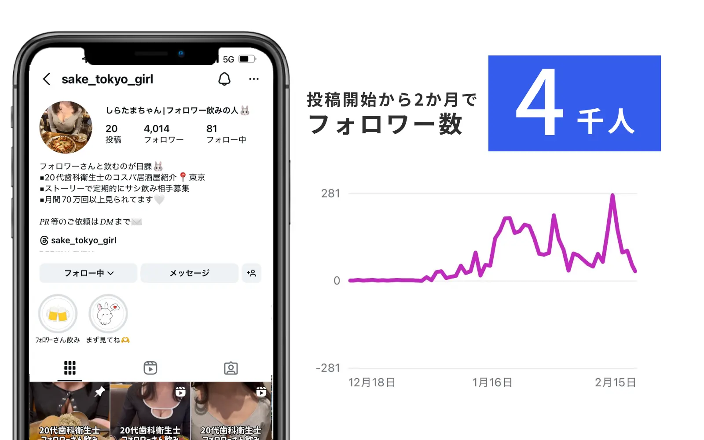

この記事でわかること
- 実在のSNS広告運用代行会社12社の比較表（LnXも同じ粒度で掲載）
- 12社それぞれの特徴・向いているケース・注意点（公式サイトのリンク付き）
- 「SNS広告」と「Meta広告」の違い（対応媒体の広さ）
- クリエイティブ制作込みか運用単体かの違い
- 契約前に確認すべきチェックリスト
「SNS広告 運用代行」で求められているもの
「SNS広告 運用代行」で検索すると、上位にはいずれも実在の代理店を13〜22社と並べた比較記事が表示されます。この検索をする人が求めているのは、選び方の一般論ではなく、実際に依頼できる候補企業を数多く見比べることです。この記事でも、その検索意図にあわせて、実名で12社を比較します。
「SNS広告」はFacebook・Instagram（Meta）に加え、X・LINE・TikTok・YouTubeなど複数の媒体を横断する総称です。特定媒体に絞った専門特化型と、複数媒体を横断できる総合型に分かれる点が、リスティング広告やGoogle広告との違いです。この記事では、実際に「SNS広告運用代行」を掲げる会社を10社比較し、公式ページで確認できた料金・対応媒体・特徴だけをまとめました。
実在のSNS広告運用代行12社比較
ここからは実名です。「SNS広告 運用代行」で検索して見つかる会社のうち、実在・稼働中で特徴の異なる12社を選び、2026年9月26日時点で公式ページを開いて確認しました。掲載順は五十音順で、順位付けではありません。
| 会社名 | 運用手数料・料金 | 初期費用 | 対応媒体 |
|---|---|---|---|
| 株式会社ADrim | 25万円未満は月5万円定額／25万円以上は広告費の20% | 0円 | Google・Yahoo・SNS各種・DSP・アフィリエイト |
| 株式会社CyberACE | 非公開 | 非公開 | LINEヤフー・Meta・X・TikTok等、SNS広告に強み |
| 株式会社Union | 非公開 | 非公開 | X・Facebook・Instagram・LINE・TikTok・YouTube |
| 株式会社オプト | 非公開 | 非公開 | Meta・LINEヤフー・TikTok等 |
| 株式会社ガイアックス | 非公開 | 非公開 | X・Instagram・Facebook・LINE・YouTube・TikTok |
| 株式会社グラッドキューブ | 広告費の20% | 0円 | Instagram・X・LINE・Facebook・YouTube |
| 株式会社デジタリフト | 非公開 | 非公開 | Facebook・X・LINE・TikTok等、幅広い媒体を横断 |
| 株式会社デジタルアイデンティティ | 非公開 | 非公開 | Meta（Facebook・Instagram）・X・YouTube・LINE・TikTok |
| 株式会社ニュートラルワークス | 広告費の18% | 5万円 | Facebook・Instagram・X・TikTok等12以上のプラットフォーム |
| 株式会社フルスピード | 非公開 | 非公開 | SNS広告全般 |
| 株式会社プロモスト | 月額5万円〜（媒体ごと） | 要見積もり | Facebook・Instagram・X・LINE |
| 株式会社ライトアップ | 月額10万円〜＋広告出稿費の30% | 非公開 | Facebook・X・Instagram・LINE |
| LnX合同会社 | 広告費の20%（50万円未満は10万円／税込） | なし（手数料に含む） | Meta・X・LINE・TikTok・YouTube等、Google・Yahooとも横断 |
※ 各社の情報は2026年9月26日に公式ページを確認したものです。料金・支援範囲は改定される可能性があるため、発注前に必ず各社にご確認ください。順位付けは行っておらず、掲載順は五十音順です。公式ページに料金の記載がなかった会社は「非公開」としており、推測では埋めていません。
表だけでは、各社がどんな会社に向いているのかまでは分かりません。ここからは1社ずつ、公式サイトで確認できた特徴・向いているケース・注意点を整理します。繰り返しになりますが順位ではありません。
株式会社ADrim
公式サイト：https://adrim.co.jp/ ／ サービスページ：運用型広告｜株式会社ADrim
Google・Yahoo!に加えSNS広告、DSP広告まで幅広く「メディアミックス」で対応しています。広告費25万円未満は月5万円の定額、25万円以上は広告費の20%という段階制です。全運用者がGoogle認定資格を保有し、月間約1,000社を運用しています。
向いているケース：SNS広告とリスティング広告をまとめて1社に依頼したい。
注意点：SNS広告単体に特化したプランではなく、複数媒体を前提とした料金体系です。
株式会社CyberACE
公式サイト：https://cyberace.co.jp/ ／ サービス詳細：デジタルマーケティング支援｜株式会社CyberACE
サイバーエージェントの完全子会社です。LINEヤフー・Meta・X・TikTok・Criteo・SmartNews等、SNS広告における媒体認定・パートナー資格の数が今回比較した中で最も豊富です。媒体との交渉力を強みとして訴求しています。料金は非公開でした。
向いているケース：複数のSNS媒体を横断し、媒体認定の豊富さを重視したい。
注意点：料金は問い合わせて確認する必要があります。
株式会社Union
公式サイト：https://union-company.jp/ ／ サービスページ：SNS広告運用代行｜株式会社Union
X・Facebook・Instagram・LINE・TikTok・YouTubeと幅広いSNS媒体に対応しています。事業内容を詳しくヒアリングした上で、最適な媒体・ターゲティング・運用方針を提案するアプローチを掲げ、TikTok広告でCPA45〜50%改善、Facebook・Instagram広告でCPA68%改善といった実績を公式に掲載しています。SNSアカウント運用も別途提供しており、企画・制作・運用・分析までワンストップで対応可能です。料金は非公開でした。
向いているケース：まず自社に合う媒体選定からヒアリングして相談したい。
注意点：料金は問い合わせて確認する必要があります。
株式会社オプト
公式サイト：https://www.opt.ne.jp/ ／ サービス一覧：サービス｜株式会社オプト
デジタルホールディングスグループの中核事業会社です。Meta・LINEヤフー・TikTokなど複数のSNS媒体の認定・受賞歴（LINEヤフーPremier5期連続等）を公式に掲載しています。料金は非公開でした。
向いているケース：体制の厚い大手グループ系に複数SNS媒体をまとめて任せたい。
注意点：料金は問い合わせて確認する必要があります。
株式会社ガイアックス
公式サイト：https://www.gaiax.co.jp/ ／ サービス紹介：SNS運用代行の魅力とサービス内容｜株式会社ガイアックス
X・Instagram・Facebook・LINE・YouTube・TikTokと幅広いSNS媒体に対応しています。グループ会社「adish」と連携し、リアルタイムでのコメント返信・監視体制を整えている点が特徴です。9年間で500社以上の取引実績があるとしています。料金は非公開でした。
向いているケース：広告配信だけでなく、コメント監視・炎上対策まで含めて相談したい。
注意点：料金は問い合わせて確認する必要があります。
株式会社グラッドキューブ
公式サイト：https://corp.glad-cube.com/ ／ サービスページ：リスティング広告 運用代行サービス｜株式会社グラッドキューブ
Instagram・X・LINE・Facebook・YouTubeと幅広いSNS広告に対応し、Google Premier Partner・Yahoo!★★パートナーなど媒体認定を複数保有しています。自社開発のヒートマップツール「SiTest」も提供しています。
向いているケース：Instagram・Facebook広告を中心に、複数SNSへの展開も検討したい。
注意点：SNS広告専用の料金プランは公式ページに明記がなく、リスティング広告の料金体系（広告費50万円以上で20%）が基準になっています。
株式会社デジタリフト
公式サイト：https://digitalift.co.jp/ ／ ソリューション：ソリューション｜株式会社デジタリフト
Facebook・X・LINE・TikTokに加え、Criteo・SmartNews・Gunosyまで、非常に幅広い媒体を横断的に扱う「トレーディングデスク」型のモデルが特徴です。日本インタラクティブ広告協会（JIAA）の会員企業でもあります。EC・D2C領域を得意としていると考えられます。料金は非公開でした。
向いているケース：非常に多くのSNS・広告媒体を一括運用したい。
注意点：料金は問い合わせて確認する必要があります。
株式会社デジタルアイデンティティ
公式サイト：https://digitalidentity.co.jp/ ／ サービスページ：AD／デジタル広告｜株式会社デジタルアイデンティティ
Meta広告（Facebook・Instagram）・X広告・YouTube広告・LINE広告・TikTok広告と幅広い媒体に対応しています。媒体ごとの特性に合わせた施策実装とクリエイティブの高速PDCAを強みに掲げています。SEOやコンテンツマーケティングなど広告以外の専門ブログメディアも複数運営しており、情報発信力があります。料金は非公開でした。
向いているケース：複数のSNS媒体を横断しつつ、クリエイティブの改善速度を重視したい。
注意点：料金は問い合わせて確認する必要があります。
株式会社ニュートラルワークス
公式サイト：https://n-works.link/ ／ サービスページ：SNS広告運用代行｜株式会社ニュートラルワークス
今回比較した中で、対応媒体の幅が最も広い会社です。Facebook・Instagram・X・TikTok・YouTube・LinkedIn・Pinterest・SmartNewsなど12以上のプラットフォームに対応しています。初期費用5万円（タグ設置・アカウント構築費用を含む）、月額運用費用は広告費の18%、最低広告費は月間50万円からです（他社サービスとの併用時は20万円から）。ランディングページやクリエイティブ制作も同時対応するワンストップ体制です。
向いているケース：Facebook・Instagram以外のマイナー媒体（LinkedIn、Pinterest等）も含めて相談したい。
注意点：最低広告費は月50万円からが基本で、少額予算での単独依頼はハードルがあります。
株式会社フルスピード
公式サイト：https://growthseed.jp/ ／ サービスページ：SNS広告運用代行｜株式会社フルスピード（Growth Seed）
SNS広告運用代行の専用サービスページを公式に用意しています。料金体系・対応媒体の詳細については公式ページに具体的な記載がなく、問い合わせによる確認が必要でした。
向いているケース：他の候補と条件を比較しながら、個別に見積もりを取りたい。
注意点：料金・対応媒体の詳細が公式ページに公開されておらず、問い合わせが前提になります。
株式会社プロモスト
公式サイト：https://www.promost.co.jp/ ／ サービスページ：SNS広告運用代行サービス｜株式会社プロモスト
Facebook・Instagram・X・LINEの4媒体に対応し、Facebook・Instagram・Xは契約期間3か月・月額5万円〜、LINEは契約期間6か月・月額5万円〜と、媒体ごとに条件を分けて公式に明示しています。初期費用・運用費用は一括前払いで、レポートは毎月末締め翌月10日に提出されます。
向いているケース：媒体ごとの料金体系を事前に把握したうえで依頼したい。
注意点：初期費用は見積もりが必要で、料金は前払い制です。
株式会社ライトアップ
公式サイト：https://www.biz4.jp/ ／ サービスページ：SNS広告運用代行サービス｜株式会社ライトアップ
Facebook・X・Instagram・LINEに対応し、最低月額利用料金10万円に加え、広告出稿費の30%が別途かかる料金体系を公式に明示しています。多くの企業のSNSアカウント運用に携わってきた実績を活かし、広告専門会社とのタッグによるPDCA最適化を掲げています。アカウント運用代行との組み合わせも推奨しています。
向いているケース：SNSアカウントの投稿運用とあわせて広告も依頼したい。
注意点：広告出稿費の30%という料率は、今回比較した中では高めの水準です。
LnX合同会社
公式サイト：https://lnx.co.jp/ ／ サービスページ：Web広告運用代行
当社です。他社と同じ粒度で書きます。運用手数料は広告出稿金額の20%で、出稿金額が50万円に満たない場合は10万円（税込）を頂戴しています。最低契約期間は6か月です。Meta・X・LINE・TikTok・YouTubeといったSNS広告と、Google・Yahoo!のリスティング広告を横断した予算配分の設計に対応しています。
向いているケース：SNS広告と検索広告をまたいだ全体設計を相談したい。
注意点：ニュートラルワークスのようなLinkedIn・Pinterestを含む幅広いマイナー媒体対応では及びません。他社の提案書や見積もりを並べた状態でのご相談も歓迎です。
重視する要素別の選び方
- 複数のSNS媒体を横断して任せたい：CyberACE、ガイアックス、ニュートラルワークス、デジタリフト、Union、デジタルアイデンティティのような会社を検討する
- Instagram・Facebookを中心に考えている：グラッドキューブ、ADrimのような会社を検討する
- 媒体ごとの料金を事前に把握したい：プロモスト、ニュートラルワークスのように条件を明示している会社を検討する
- コメント監視・炎上対策まで含めたい：ガイアックスのような会社を検討する
- アカウント運用と広告をセットで依頼したい：ライトアップのような会社を検討する

代理店選びで陥りやすい失敗パターン
| パターン | 何が起きるか | 事前に防ぐ質問 |
|---|---|---|
| 媒体を広げすぎて工数が分散する | 1媒体あたりの改善スピードが落ちる | 「まず何媒体から始めるのが適切ですか」 |
| クリエイティブ制作費を見落とす | 運用手数料は安くても、バナー・動画制作費が別途積み上がる | 「クリエイティブ制作は手数料に含まれますか」 |
| 媒体ごとの料金体系を確認しない | LINEだけ契約期間が長い等、媒体間で条件が異なることに後から気づく | 「媒体ごとに料金・契約条件は変わりますか」 |
契約前チェックリスト
SNS広告運用代行を選ぶ前のチェックリスト
【媒体・範囲】
- 対応可能な媒体の一覧を確認した
- まず何媒体から始めるべきか、提案を受けた
- クリエイティブ制作が範囲に含まれるか確認した
【料金】
- 媒体ごとに料金・契約条件が異なるか確認した
- 最低広告費が自社の予算と合っているか確認した
【契約】
- 最低契約期間と、途中解約時の扱いを確認した
- 広告アカウントを自社名義で保有・開示してもらえるか確認した
なお、契約書の条項そのものの解釈、とくに途中解約時の扱いやアカウントの帰属に関する個別の判断については、弁護士等の専門家にご確認ください。
LnXの見解
「SNS広告 運用代行」で相談を受けるとき、まず確認しているのは「どの媒体を、どういう目的で使いたいか」です。SNS広告は媒体ごとにユーザー層と得意な訴求が異なるため、媒体を先に決めるより、届けたい相手と目的を先に決めるほうが失敗が少なくなります。
今回12社を実際に比較して分かったのは、対応媒体の幅も料金体系もまったく違うということです。ニュートラルワークスのように12以上のプラットフォームに対応する会社もあれば、プロモストのように4媒体に絞って条件を明示する会社、ガイアックスのようにコメント監視まで含める会社もあります。どれが優れているという話ではなく、自社が届けたい媒体と求める体制で選ぶべき相手が変わるというのが実態です。
LnXでは、SNS広告と検索広告（Google・Yahoo!）を横断した予算配分の設計に対応しています。運用手数料は広告出稿金額の20%（50万円未満は10万円／税込）、最低契約期間は6か月です。いまのSNS広告の成果が伸び悩んでいる場合、既存アカウントを拝見したうえで改善余地をお伝えすることもできます。ご相談は無料で、その場で契約はお願いしていません。
よくある質問
QSNS広告運用代行とMeta広告運用代行はどう違いますか？
「SNS広告」はFacebook・Instagram（Meta）に加え、X・LINE・TikTok・YouTubeなど複数のSNS媒体を横断する総称です。「Meta広告」はそのうちFacebook・Instagramに特化した領域を指します。複数のSNS媒体を横断して運用したい場合はSNS広告運用代行、Instagram・Facebookに絞りたい場合はMeta広告運用代行を掲げる会社を検討するとよいでしょう。
QSNS広告運用代行の料金相場はいくらですか？
今回比較した会社では、月額5万円前後の少額プランから、月額50万円以上の本格運用プランまで幅がありました。手数料率も18%〜20%が中心ですが、媒体ごとに定額を設定する会社もあり、体系はさまざまです。
Q複数のSNS媒体を同時に運用してもらえますか？
今回比較した会社の多くが複数媒体への対応を掲げています。ただし媒体を追加するごとに手数料が加算される会社もあるため、複数媒体をまとめて依頼する場合は見積もりの内訳を確認してください。
Q比較表に載っている会社の中でどこがおすすめですか？
予算規模や重視したい要素（対応媒体の幅、料金の透明性、クリエイティブ制作込みかなど）によって変わるため一概には言えません。この記事では順位を付けず、各社の特徴・向いているケース・注意点を1社ずつ整理しています。
Q料金が非公開の会社が多いのはなぜですか？
業種・媒体数・タスク量によって工数が大きく変わるため、個別見積りにしている会社が多いためです。料金非公開の会社に問い合わせる際は、想定する広告費と対応してほしい媒体を先に伝えると、見積もりの精度が上がります。
Q契約前に確認すべき最低限のポイントは何ですか？
対応媒体の範囲、運用手数料の水準、最低広告費、クリエイティブ制作が範囲に含まれるかの4点です。SNS広告はクリエイティブの質が成果に直結する媒体のため、制作対応の有無は特に確認しておくことをおすすめします。